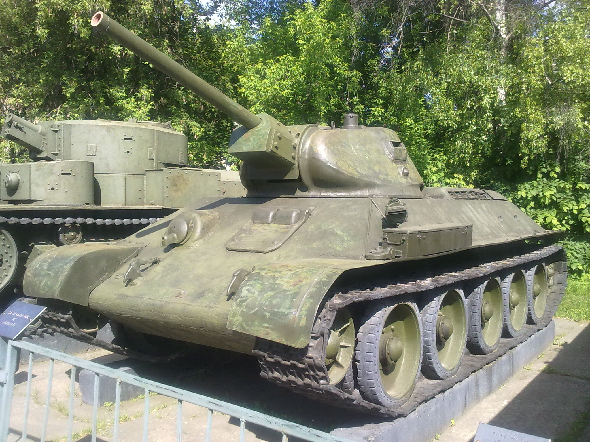
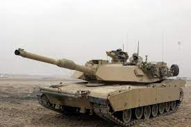

Танки
Здесь вы найдете информацию о танках и их истории.
Т-34
Т-34 - советский средний танк периода Второй мировой войны, который играл ключевую роль в разгроме немецких войск. Он был создан в 1940 году и оставался в производстве до конца войны.
Пантера
Пантера - немецкий танк среднего класса периода Второй мировой войны, созданный в ответ на появление Т-34. Он был введен в эксплуатацию в 1943 году и считался одним из лучших танков своего времени.

Абрамс
Абрамс - американский основной боевой танк, разработанный в 1970-х годах. Он был назван в честь генерала Креяга Абрамса, который играл ключевую роль в разработке танков Американской армии.
